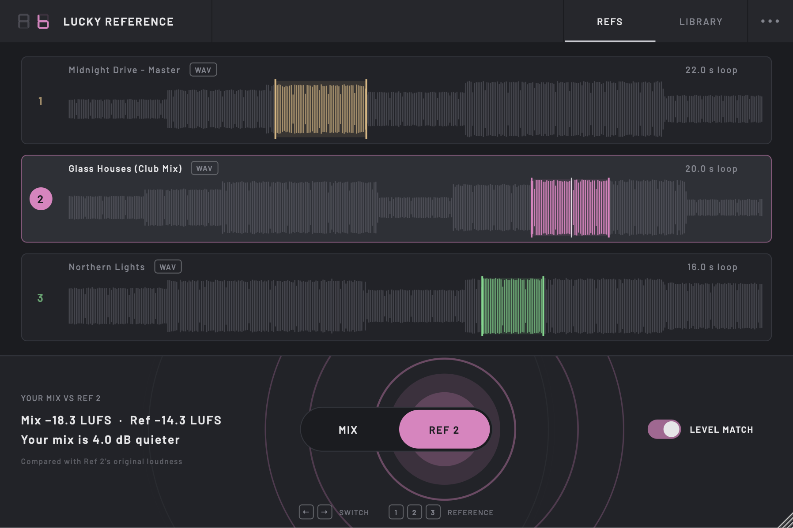
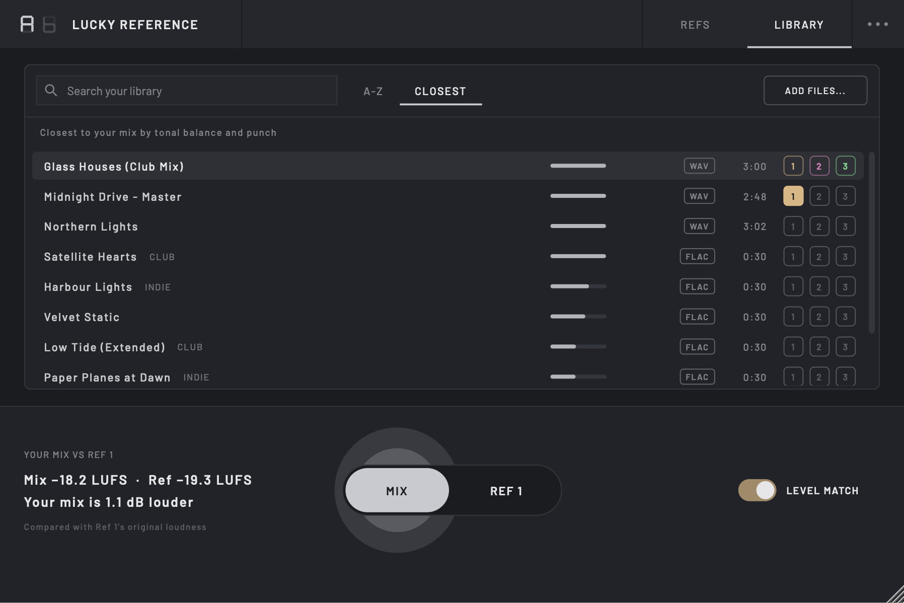
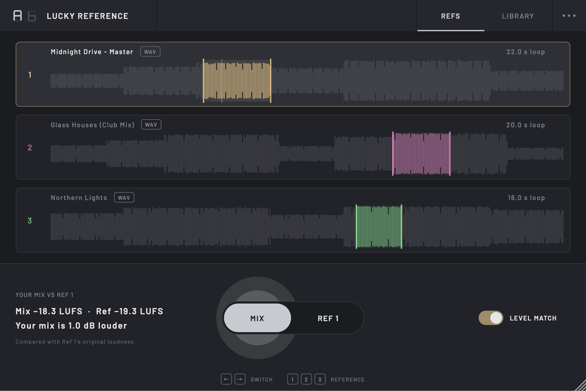

No-nonsense referencing.
A/B your mix against the records you love, at the same loudness, with one switch.
Free and open source · Apple Silicon & Intel · macOS 13 or newer

No reference tracks to solo, mute or turn down.
A fair comparison
Louder always sounds better, so the reference is turned to your mix's loudness (BS.1770, over the last 10 seconds you've played) before you hear it. Flip the Level Match switch off to hear the real gap.
One switch
Flip between your mix and a reference with a click or the ← → keys, and pick a reference with 1 2 3. A short crossfade keeps it click-free. In Ableton you can put the switch in the device panel and map it to a key or MIDI controller.
Straight to the good part
Each reference loops its loudest 16 seconds as soon as it loads, which is usually the busiest part of the arrangement. Drag across the waveform to choose another section, or double-click to play the whole track.
A number for mastering
The readout shows both LUFS values and says how your mix compares in plain words, such as “Your mix is 3.4 dB quieter”. It always compares real levels, so it's a quick check on how loud your master is next to the records it'll sit beside.
Every reference to hand
Your references live in one library, ready in every session without digging through folders or dragging files into your project. Search it and load a track into any slot with one click.
Find the closest match
Start with the reference you had in mind, then let the library suggest more. It ranks your tracks by how close their tonal balance and punch are to your mix, turning up comparisons you might not have reached for.
The closest references, one click away.
Keep your references in Music › Lucky Reference › References, or add the folders you already use from the ⋯ menu. They're indexed where they are, in every session.
- Search by name or folder, then load a track into reference 1, 2 or 3 with the buttons on its row.
- Closest ranks your library by how close each track's tonal balance and punch are to your mix, after 20 seconds of playing. As more of your mix plays, it tells you if your top matches change.
- Add to library copies a reference you dropped in from elsewhere, so it's there next time.
Library tracks are analysed once in the background and remembered. Nothing is copied or replaced without asking.

Three steps, then trust your ears.
-
Put it last on your master
After your limiter and any mastering chain, so you hear your mix exactly as it leaves. Monitor correction such as Sonarworks can come after it.
-
Drop in your references
Drag up to three tracks onto the slots, click a slot to browse, or pick them from your library. Each one picks its loudest section to loop.
-
Play and flip
Press play in your DAW and switch between your mix and a reference. Give it a couple of seconds to measure your mix the first time.

Four steps to your first comparison.
-
Download the installer
Download Lucky-Reference.pkg and double-click it.
-
Give the installer permission to run
macOS blocks the installer the first time with “Lucky-Reference.pkg” Not Opened, because free apps like Lucky Reference aren't signed with a paid Apple certificate. To allow it:
- Click Done (not Move to Trash).
- Open System Settings → Privacy & Security and scroll down to Security.
- Click Open Anyway, enter your password, then click Open.
You only need to do this once.
-
Run the installer
Click through to the end. It installs the VST3 for every user on your Mac.
-
Open it in your DAW
Add Lucky Reference to the end of your master track (rescan plug-ins first if it doesn't appear).
Prefer to install by hand?
Download the zip from the releases page and copy Lucky Reference.vst3 into ~/Library/Audio/Plug-Ins/VST3. Then unblock it in Terminal:
xattr -dr com.apple.quarantine ~/Library/Audio/Plug-Ins/VST3/"Lucky Reference.vst3"
Notes
Light on CPU
About 0.1% of each audio block's time on average at 48 kHz. Your mix passes through untouched when the switch is on Mix. A 4-minute reference loads in under half a second.
Formats
VST3, built for Apple Silicon and Intel Macs running macOS 13 or newer. References can be WAV, AIFF, FLAC, MP3 or M4A, up to 15 minutes long, at any sample rate.
Your files stay put
References are linked, not copied into your project. Keep them in your library and they always have a home; if one moves, its slot says so and you can click it to find the file again.
Open source
The code is on GitHub under the AGPLv3. Bug reports and ideas are welcome as issues.